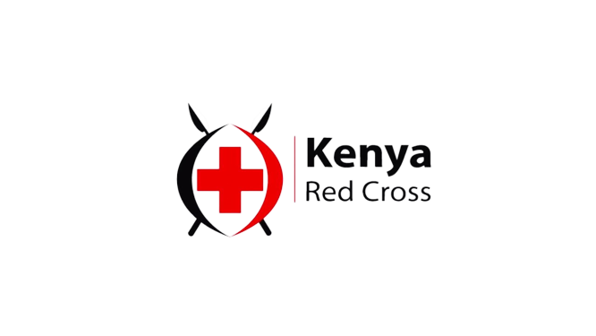
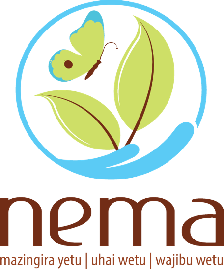
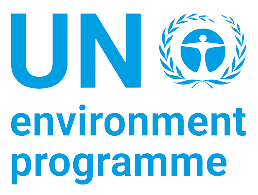

KENYA RED CROSS
The Red Cross is a humanitarian Organization that aims at promoting sustainability, health, well being and resilience of communities. It provides relief services during emergencies, crisis and pandemics. It implements programmes that aim to lessen or transfer the adverse effects of hazards through preparedness, mitigation and response.
NATIONAL ENVIRONMENT MANAGEMENT AUTHORITY
The National Environment Management Authority (NEMA) is a national entity, which was established in 2002 with the objectives of supervising and coordinating environmental activities and serving as the main national body to implement environmental policies in all sectors within the country.It is mandated to write and enforce laws and regulations for environmental management, to educate the public about the nation's environmental issues and to control and prevent pollution, as well as conserve natural resources.
 FOOD AND AGRICULTURE ORGANIZATION
FOOD AND AGRICULTURE ORGANIZATION
The Food and Agriculture Organization(FAO) is an international organization that leads international efforts to defeat hunger
and improve nutrition and food security. Its motto is "let there be bread". It was founded on 16 October 1945 with the main
aim of cubbing hunger and promoting good health through nutrition. It plays a major role in climate change since it is
involved in coming up and implementing ways of dealing with climate change and its adverse effects.
UNITED NATION ENVIRONMENT PROGRAM
UNEP’s mission is to provide leadership and encourage partnership in caring for the environment by inspiring, informing, and enabling nations and peoples to improve their quality of life without compromising that of future generations.
It works on delivering transformational change for people and nature by drilling down on the root causes of the three planetary crises of climate change, nature and biodiversity loss, and pollution and waste